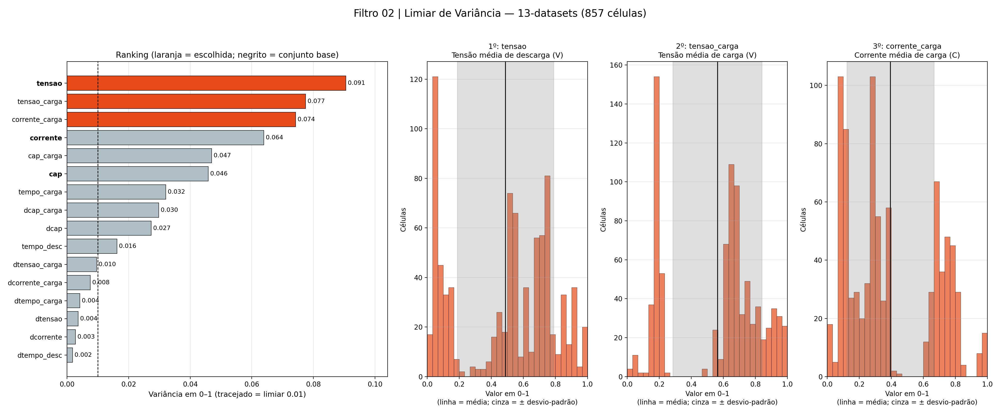
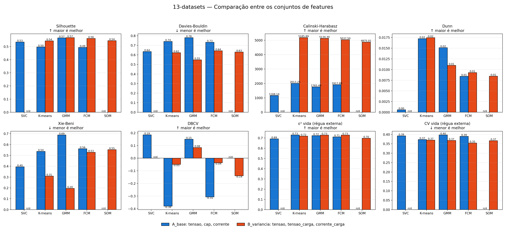
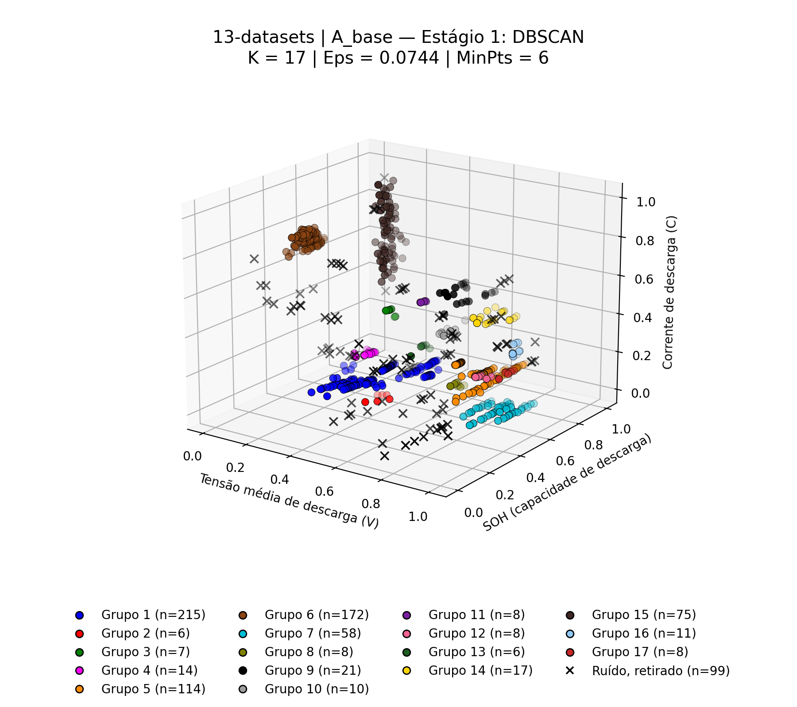
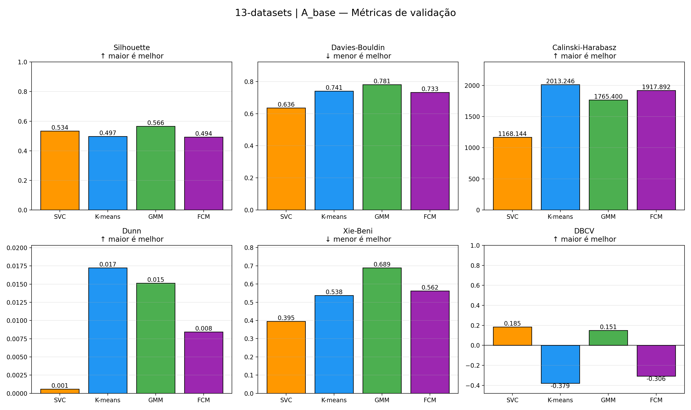
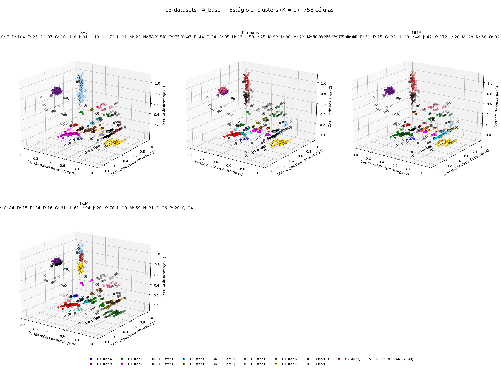
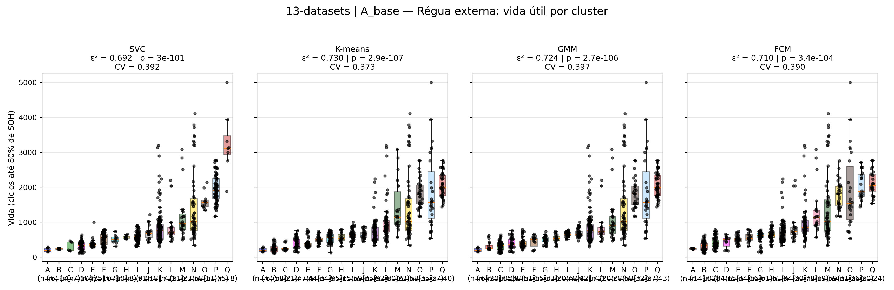
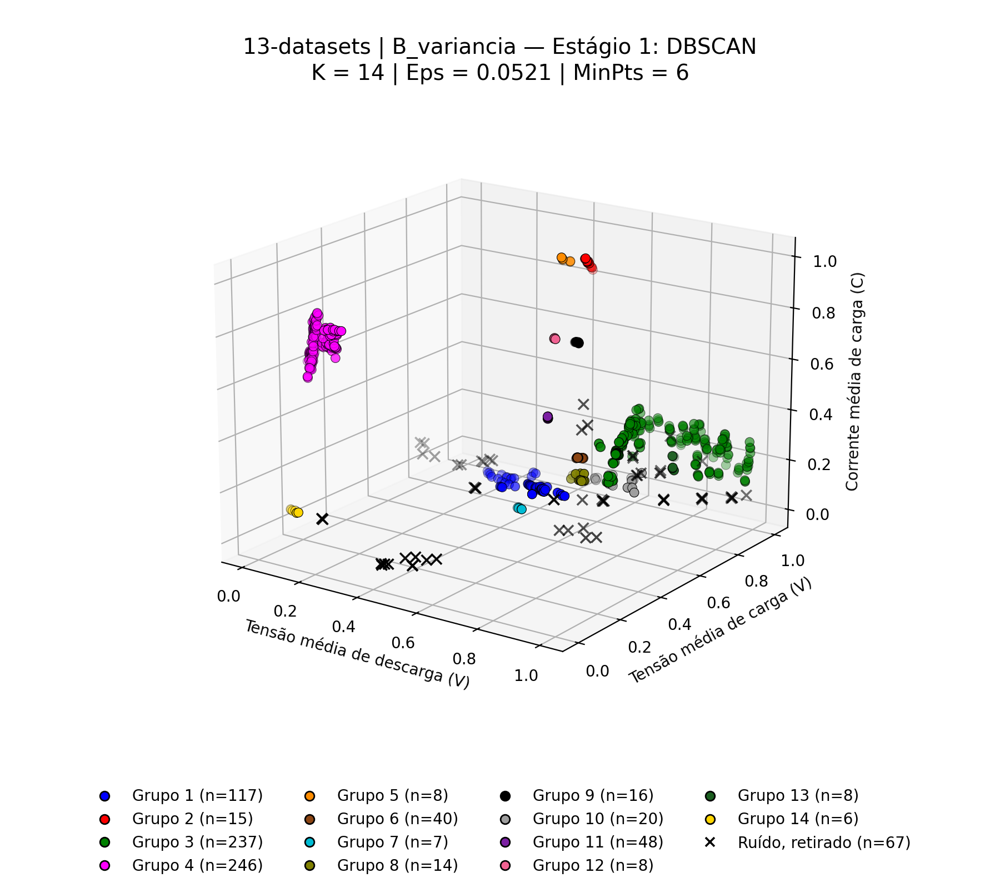
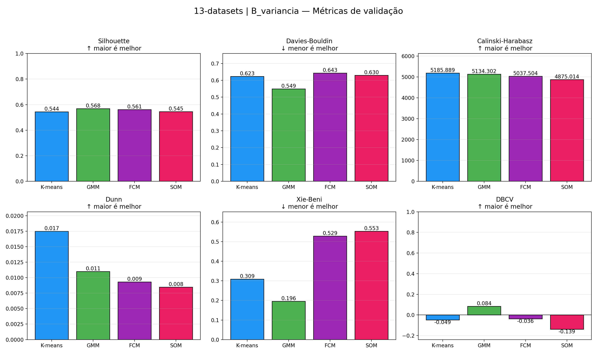
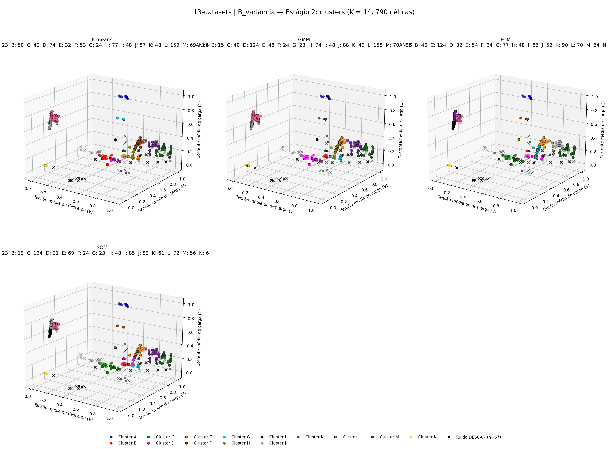
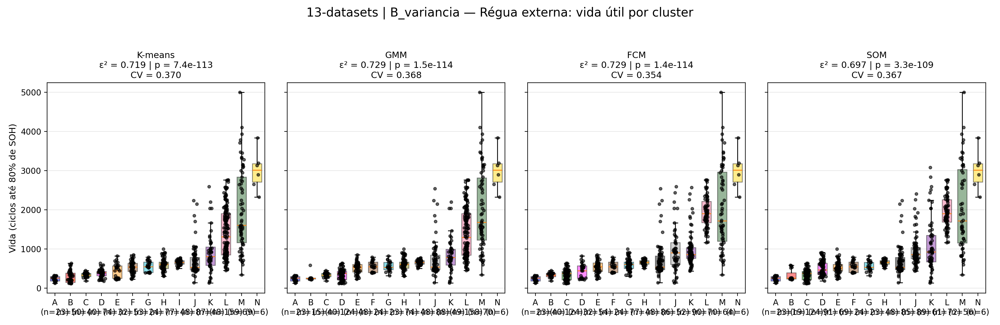

Seleção por filtro 02: Limiar de Variância (13 datasets)
O filtro Limiar de Variância ordena as features candidatas pela variância (em 0–1); as 3 maiores notas formam o conjunto B_variancia, comparado com o conjunto base no mesmo teste (DBSCAN + 5 algoritmos, mesmas células).
A_base: tensao,cap,corrente · B_variancia: tensao,tensao_carga,corrente_carga
ciclos 6–10 e 96–100 · MinPts = 6 · K = do DBSCAN · régua externa: vida útil (ε² do Kruskal-Wallis e CV), que não participou da escolha das features
Resumo
| teste | features | células | ruído | células no estágio 2 | K DBSCAN | K usado | Eps | maior silhueta | maior ε² vida | situação |
|---|---|---|---|---|---|---|---|---|---|---|
| A_base | tensao, cap, corrente | 857 | 99 | 758 | 17 | 17 | 0.0744 | GMM | K-means (0.730) | ok (5 aviso(s)) |
| B_variancia | tensao, tensao_carga, corrente_carga | 857 | 67 | 790 | 14 | 14 | 0.0521 | GMM | FCM (0.729) | ok (5 aviso(s)) |
Seleção das features: Limiar de Variância
Escolhidas: tensao, tensao_carga, corrente_carga · base: tensao, cap, corrente

Ranking completo
| posição | feature | descrição | Limiar de Variância | situação | no conjunto base |
|---|---|---|---|---|---|
| 1 | tensao | Tensão média de descarga (V) | 0.0905 | escolhida | sim |
| 2 | tensao_carga | Tensão média de carga (V) | 0.0774 | escolhida | |
| 3 | corrente_carga | Corrente média de carga (C) | 0.0743 | escolhida | |
| 4 | corrente | Corrente de descarga (C) | 0.0639 | sim | |
| 5 | cap_carga | Capacidade de carga / nominal | 0.0470 | ||
| 6 | cap | SOH (capacidade de descarga) | 0.0459 | sim | |
| 7 | tempo_carga | Tempo de carga (h) | 0.0321 | ||
| 8 | dcap_carga | Δ Capacidade de carga / nominal | 0.0298 | ||
| 9 | dcap | Δ SOH (capacidade de descarga) | 0.0274 | ||
| 10 | tempo_desc | Tempo de descarga (h) | 0.0162 | ||
| 11 | dtensao_carga | Δ Tensão média de carga (V) | 0.0096 | removida (abaixo do limiar) | |
| 12 | dcorrente_carga | Δ Corrente média de carga (C) | 0.0076 | removida (abaixo do limiar) | |
| 13 | dtempo_carga | Δ Tempo de carga (h) | 0.0041 | removida (abaixo do limiar) | |
| 14 | dtensao | Δ Tensão média de descarga (V) | 0.0036 | removida (abaixo do limiar) | |
| 15 | dcorrente | Δ Corrente de descarga (C) | 0.0028 | removida (abaixo do limiar) | |
| 16 | dtempo_desc | Δ Tempo de descarga (h) | 0.0018 | removida (abaixo do limiar) |
Comparação entre os conjuntos

Placar: em quantos algoritmos cada conjunto ganhou cada métrica
| A_base | B_variancia | |
|---|---|---|
| métrica | ||
| Silhouette | 0 | 3 |
| Davies-Bouldin | 0 | 3 |
| Calinski-Harabasz | 0 | 3 |
| Dunn | 1 | 2 |
| Xie-Beni | 0 | 3 |
| DBCV | 1 | 2 |
| ε² vida | 1 | 2 |
| CV vida | 0 | 3 |
| TOTAL internas | 2 | 16 |
| TOTAL régua da vida | 1 | 5 |
A_base: tensao, cap, corrente
células: 857 · ruído: 99 · células no estágio 2: 758 · K DBSCAN: 17 · K usado: 17 · Eps: 0.0744 · maior ε² vida: K-means (0.730)
Situação: ok (5 aviso(s))




Tabela de métricas
| Silhouette | Davies-Bouldin | Calinski-Harabasz | Dunn | Xie-Beni | DBCV | ε² vida | p (Kruskal-Wallis) | CV vida | |
|---|---|---|---|---|---|---|---|---|---|
| SVC | 0.5345 | 0.6356 | 1168.1439 | 0.0006 | 0.3954 | 0.1854 | 0.6920 | 0.0 | 0.3922 |
| K-means | 0.4974 | 0.7408 | 2013.2457 | 0.0172 | 0.5376 | -0.3789 | 0.7296 | 0.0 | 0.3729 |
| GMM | 0.5659 | 0.7810 | 1765.3997 | 0.0151 | 0.6885 | 0.1507 | 0.7236 | 0.0 | 0.3972 |
| FCM | 0.4935 | 0.7325 | 1917.8919 | 0.0084 | 0.5618 | -0.3064 | 0.7104 | 0.0 | 0.3902 |
B_variancia: tensao, tensao_carga, corrente_carga
células: 857 · ruído: 67 · células no estágio 2: 790 · K DBSCAN: 14 · K usado: 14 · Eps: 0.0521 · maior ε² vida: FCM (0.729)
Situação: ok (5 aviso(s))




Tabela de métricas
| Silhouette | Davies-Bouldin | Calinski-Harabasz | Dunn | Xie-Beni | DBCV | ε² vida | p (Kruskal-Wallis) | CV vida | |
|---|---|---|---|---|---|---|---|---|---|
| K-means | 0.5435 | 0.6230 | 5185.8886 | 0.0175 | 0.3088 | -0.0486 | 0.7189 | 0.0 | 0.3700 |
| GMM | 0.5681 | 0.5487 | 5134.3020 | 0.0110 | 0.1959 | 0.0844 | 0.7291 | 0.0 | 0.3682 |
| FCM | 0.5615 | 0.6433 | 5037.5040 | 0.0093 | 0.5286 | -0.0363 | 0.7291 | 0.0 | 0.3545 |
| SOM | 0.5450 | 0.6303 | 4875.0144 | 0.0085 | 0.5533 | -0.1387 | 0.6972 | 0.0 | 0.3668 |